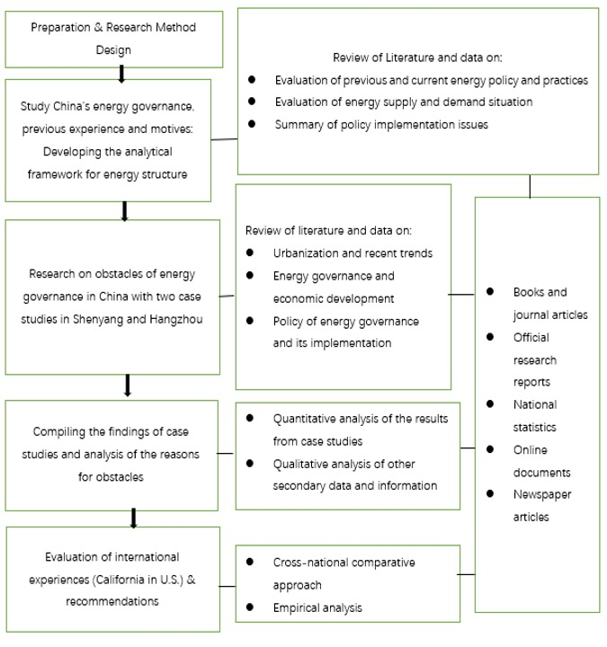

In the 1950s, China seldom considered the environment when making development plans and policies. Mao Zedong in fact proposed that he hoped to see chimneys everywhere in Chinese cities because China needed to improve employment opportunities and income levels. In the 1980s, Deng Xiaoping began to implement the policy of reform and opening up in order to accelerate economic development. Through the development the processing and manufacturing industries for export to western countries, China's economy has developed rapidly in the past 40 years. Until the beginning of the 21st century, China's central government has used economic development (emphasizing GDP growth) as the main criterion for assessing local officials’ performance, and as a result, it did not prioritize environmental protection. Under this system, local officials do not consider environmental protection and energy consumption when promoting economic development because it does not help their political careers. On the other hand, officials who focus on fixed asset investments and infrastructure development are more likely to be promoted (Wu, et al., 2013).
At the beginning of the 21st century, the central government’s policy began to change, and the indicators for environmental performance and energy efficiency were clearly included in the performance evaluation system of local officials. The central government began to put more emphasis on "scientific development” (Chow, 2010). In 2006, starting from the 11th "Five Year Plan", Beijing upgraded several environmental objectives from "encouraged" to "mandatory". Since then, the mandatory environmental objectives have been written into the annual responsibility contract of local leading cadres, and they have become an important standard of cadre promotion during decision-making evaluations (Heberer & Anja, 2011). Its purpose is to encourage government officials at all levels to fulfill the requirements of the central government’s policy for environmental protection (Ran, 2013). At the 2009 Copenhagen Climate Summit, China promised to reduce its carbon intensity by 40% - 50% by 2020 (Natural Resources Defense Council, 2014). This goal is defined as the proportion of carbon dioxide emission reduced per yuan of economic output. Therefore, even if the total carbon dioxide emissions increase (due to GDP increases), this proportion can still be reduced, and the resulting goal can still be met. At the 2015 Paris climate conference, China submitted its first Nationally Determined Contribution proposal to the United Nations. Then, in February 2020, Xi Jinping put forward more ambitious emissions reductions targets at the Climate Action Summit (Shiyi, 2020) as shown in Table 1.
Why has the Chinese government changed its policy approach so much to orient itself toward environmental protection? One explanation is that the Communist Party of China hopes to enhance its political prestige on the international stage and in the eyes of the Chinese people through an emphasis on environmental protection. The commitment to protect the environment can send an important signal to the people as well as to the international community that China is a leader on the international stage, and that the Communist Party of China is acutely concerned about the health of its own people (Wang, 2013). If China continues to be regarded as one of the countries with an unhealthy environment in the world, it will be difficult for it to realize its vision of becoming a globally recognized world power. Another explanation is that the Chinese government believes that all countries in the world will eventually embark on the road of low-carbon development, so China hopes to be a "leader" in this emerging field by leading the development of clean technology and its integration into the economy. Environmental governance can kill two birds with one stone for the government: it can improve people's quality of life and enhance people's support for the government, which would certainly reduce the risk of social instability, a big concern for the government.
Whatever the explanation for its pivot toward the environment, the rules and system design the central government implement for environmental governance are crucial to determine whether healthy energy governance can be promoted. Therefore, the promotion rules for local officials, their own environmental governance capabilities, as well as their abilities to legislate and enforce the law in this area, play a core role in the effectiveness of energy governance. There are many different functional departments under the central government, all of which have different priorities in handling affairs. For example, the National Development and Reform Commission (NDRC) shoulders a variety of management functions. Its main function is to promote national economic development, but it also has responsibility to promote the development of an ecological civilization, including core principles like energy conservation and comprehensive and effective utilization of available resources. NDRC officials have more power than officials of the National Energy Administration (NEA) because the policies design and implemented by the National Energy Administration must be examined and approved by the NDRC (NDRC, 2019). These power differentials between government agencies and officials ultimately determine whether the rules and regulations of energy governance can be implemented and receive the supervision required to achieve successful results. If the institutions supporting economic growth can interfere in energy governance, the possibility of making significant progress in energy governance will be reduced.
